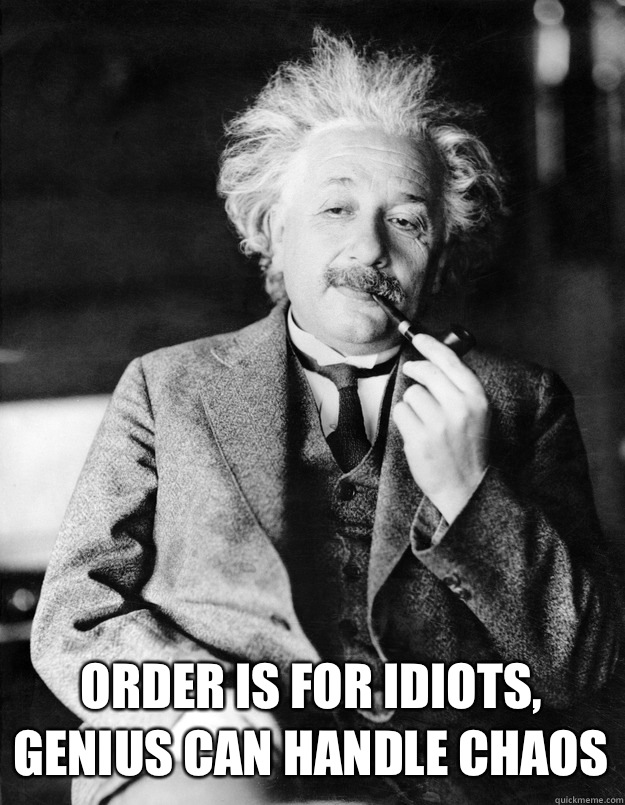
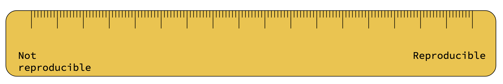

Open Science and
Research Software Engineering
Workshop
Center for Advanced Internet Studies (CAIS)
Introduction
Workshop materials
> whoami
Quirin Würschinger
q.wuerschinger@lmu.de
Wissenschaftlicher Mitarbeiter and PostDoc in (computational) linguistics
LMU Munich

Current work
- research
- lexical innovation on the web and in social networks
- variation and change in language use and social polarization in social networks
- using Large Language Models (LLMs) like ChatGPT for research in linguistics and social science.
- teaching: corpus linguistics and research methodology
Promoting Open Science in (computational) linguistics at LMU
- teaching and applying reproducible corpuslinguistic methods
- creating and sharing corpora among researchers and students
Topics
- Open Science: What is it and why does it make sense?
- Project setup: Learn to efficiently organize your project’s files and folders.
- Data, code, and document management: Understand how to effectively manage and maintain your data, code, and documents.
- Utilizing different data types: Discover how to work with various data types, such as interviews, web, and social media data.
- Publication process: Learn about options for publishing your data, code, and documents.
Time table
| Topic | Start | End |
|---|---|---|
| Intro | 09:00 | 09:30 |
| Open Science principles | 09:30 | 10:30 |
| — | 10:30 | 10:50 |
| version control | 10:50 | 11:10 |
| project structure | 11:10 | 12:00 |
| data | 12:00 | 12:30 |
| — | 12:30 | 13:30 |
| code | 13:30 | 14:00 |
| methods | 14:00 | 14:30 |
| authoring | 14:30 | 15:15 |
| — | 15:15 | 15:30 |
| publishing | 15:30 | 16:00 |
| open issues and recap | 16:00 | 16:30 |
Addressing different backgrounds and goals
Backgrounds and interests
CAIS: Forschung zu Digitalisierung und Digitale Gesellschaft
Fachrichtungen
- Politikwissenschaft
- Erziehungswissenschaft
- Kommunikationswissenschaft
- Soziologie
- …
Daten und Methoden
- qualitativen Interviews
- Textanalysen
- quantitativen Befragungen
- experimentellen Designs
- Online-Plattformen/Social Media
- …
Main interests
- reproducible workflows
- managing files and folders
- plain text authoring
- programming with Python and R
- methods
- quantitative approaches
- text analysis
- questionnaires
- publishing
- papers
- code and data
Who are you?
- name
- place and position
- your research interest in about 3 sentences for someone outside your field

Open Science principles
What is Open Science

Why should we do Open Science?

Principles of Open Science

Open Science lifecycle
Roles in Open Science
- Funders
- make open science part of the selection process, and conditions for grantees conducting research.
- Publishers
- make open science part of the review process, and conditions for articles published in their journals.
- Institutions
- make open science part of academic training, and part of the selection process for research positions and evaluation for advancement and promotion.
- Societies
- make open science part of their awards, events, and scholarly norms.
- Researchers
- enact open science in their work and advocate for broader adoption in their communities.
Who profits from Open Science?

What is Open Science to you?
What do you find interesting, important, or attractive about Open Science?
Learning outcomes
Implementing an open and reproducible workflow
- version control
- project structure
- data
- methods
- code
- authoring
- publishing
Break
Taking notes
Networked notes
- logseq
- Obsidian
Version control
Why use version control?

git and GitHub/GitLab
- git
- software on your machine
git add scr/tests.py
git commit -m 'add tests'
git push- GitHub and GitLab
- services on a remote server


git commands

Collaborating using GitHub

GitHub workflow

How to set up a GitHub repository
create a repository on GitHub
- (create GitHub account)
- click on
New(https://github.com/new) - specify repo name 1
- specify description
- specify visibility: private or public
- select
Add a README file - specify licence 2
clone the repository
go to the folder where you want your project to live
git clone https://github.com/wuqui/opensciws.gitadd changes
commit changes
push changes
Project structure

Let’s not pretend we’re all geniuses …
File names

File names should be:
- Machine readable
- Human readable
- Optional: Consistent
- Optional: Play well with default ordering
File structure
.
├── analysis <- all things data analysis
│ └── src <- functions and other source files
├── comm
│ ├── internal-comm <- internal communication such as meeting notes
│ └── journal-comm <- communication with the journal, e.g. peer review
├── data
│ ├── data_clean <- clean version of the data
│ └── data_raw <- raw data (don't touch)
├── dissemination
│ ├── manuscripts
│ ├── posters
│ └── presentations
├── documentation <- documentation, e.g. data management plan
└── misc <- miscellaneous files that don't fit elsewhere
tree DIRcookie cutters
Practice: managing files and folders
Data
FAIR data

Types of data
- interviews
- questionnaires
- web
- social media
Code
Reproducibility et al.

notebooks and literate programming
- Knuth
- application
- R
- Python: nbdev
- application
Licensing

Other materials

Publishing
How: How can we organise our project from the beginning so that we can publish outputs in the end? Where: Where can I publish my work (platforms, research centers infrastructure, …)?
Pre-registration

{kind=link}
{kind=link}
{kind=link}
Outlets
- ArXiV
- preprints
- Zenodo
- all kinds including data, code, preprints, etc.
- GitHub and GitLab
- code, software
- Open Science Framework
- all kinds including data, code, preprints, preregistration, etc.
- Software Heritage
- archival of code (long-term)
- Papers with Code
- code and data for and with papers, mostly Machine Learning
- …
Resources
- DRA
- The Turing Way
- Data Carpentries